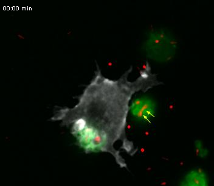
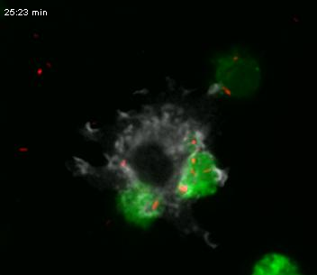
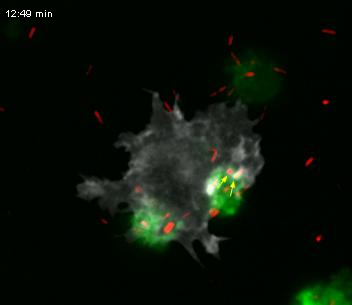

Chapter 4 · observed cell behaviour
Phagocytosis changes cell shape over time
Follow the source arrows and changing membrane signal beside the bacterial cluster. This experiment supplies an observed example; uptake and microbial killing require different evidence.
RAW 264.7 mouse macrophage cell line: grey is PM-GFP-associated membrane signal, green labels apoptotic material, and red labels Pseudomonas aeruginosa. These are microscopy display colours. The source’s yellow arrows are unchanged.


The time-lapse contains 102 frames at seven encoded frames per second, lasting 14.571 file seconds. The source clocks below retain their own timing labels. Playback speed and 0.5-second steps operate on file time; no acquisition interval is inferred from the export frame rate.




This optical view does not resolve a membrane bilayer, identify receptors, establish complete three-dimensional enclosure or demonstrate bacterial death. It is a cultured mouse cell-line experiment, not a direct image of human wound immunity.